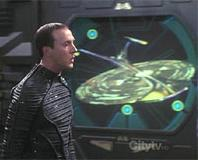

2154: L'Enterprise
arriva finalmente in prossimità del pianeta in cui viene sviluppata l'arma che
dovrebbe essere utilizzata per distruggere la
Terra, ma la missione di Archer viene messa in dubbio da una visita di
Daniels, che porta Archer 400 anni nel futuro per mostrargli una cospirazione di
una specie che sta pianificando un'invasione e sta aizzando gli
Xindi contro gli Umani.
-
Vediamo
diverse navi federali di 400 anni nel futuro, compreso uno schema dell'Enterprise-J
(vedi foto a fianco).
- L'Enterprise conclude il suo viaggio verso Azati Prime.
- Gli
Xindi completano la versione finale dell'arma per distruggere la
Terra.
- Scopriamo che la battaglia finale tra la Federazione e gli alieni
transdimensionali di svolgerà a Procione V e sarà un punto fondamentale della
storia della galassia.
- Scopriamo chi ha creato la
Distesa Delfica e
perché.
- Archer rivela a Degra i piani degli alieni che hanno creato la
Distesa Delfica,
gli
Xindi sono disposti a credere al capitano, con l'eccezione della specie
rettile.
- Daniels rivela ad Archer che il capitano ricoprirà un ruolo fondamentale
negli eventi futuri.
- Scopriamo che il consiglio degli Xindi
non aveva autorizzato la specie rettile a creare l'arma biologica, ciò spiega
come mai i rettili abbiano creato un laboratorio nel passato (Carpenter
Street).
- Archer viene fatto prigioniero dagli Xindi
rettili.
- T'Pol cede più volte alle emozioni e addirittura piange.
- Dall'interrogatorio di Archer apprendiamo che gli Xindi
non sono sicuri della consistenza delle forze capeggiate da Archer e temono
evidentemente l'esistenza di altre navi oltre all'Enterprise; inoltre
apprendiamo che gli Xindi
avevano sottovalutato la quantità di informazioni in possesso dei terrestri.
- Archer ordina di distruggere la base di osservazione sulla luna prima che
la rotazione del corpo possa portarla in posizione per comunicare. Ha poco
senso creare un posto d'ascolto che per metà del tempo si trova fuori dalla
portata delle comunicazioni, ci sarebbero diverse soluzioni possibili per
permettere alla base di restare continuamente in comunicazione.
- Durante la prima incursione della navetta, una nave di sorveglianza la
individua e ordina di tornare alla sua nave. Dopodichè la navetta procede
indisturbata fino all'arma, questo significa che la nave di guardia non si è
accertata che la navetta uscisse dal perimetro di sicurezza: questa è
sicuramente una disattenzione piuttosto grave, considerata l'importanza del
progetto per gli
Xindi.
- Il comandante delle forze militari degli
Xindi ordina a Degra di progettare un vortice più esteso in modo da
poter far viaggiare quattro navi da guerra insieme all'arma. Il suo scopo è
quello di distruggere ogni colonia e nave terrestre dopo l'attacco: il
risultato di questa strategia sarebbe quello visto in
Twilight.
- Quando le navi degli Xindi
attaccano la navetta di Archer si vede che usano armi
a energia ed è chiaro che queste scaldano l'acqua quando vengono emesse e
quando colpiscono la navetta. Si dovrebbe, quindi, vedere del vapore
che sale in superficie, ma in effetti il colpo ci viene mostrato come se
fosse sparato nello spazio vuoto.
Mayweather: I think I've found reverse.
Tucker: Great... but, unless we plan to fly in ass-first, we'd better
figure how to make it go forward.
Mayweather: Can't argue with that.
Sato: Believe it or not, that was «Have a nice day», or... its
equivalent.
Archer: I thought you were the skeptical one, when it came to time
travel.
T'Pol: Our recent visit to Detroit has tempered my skepticism.
Mayweather: I know these controls aren't exactly intuitive.
Archer: I think they were built for someone with compound eyes.
Mayweather: Good. You're starting to think like an insectoid.
Archer: I'll take that as a compliment.